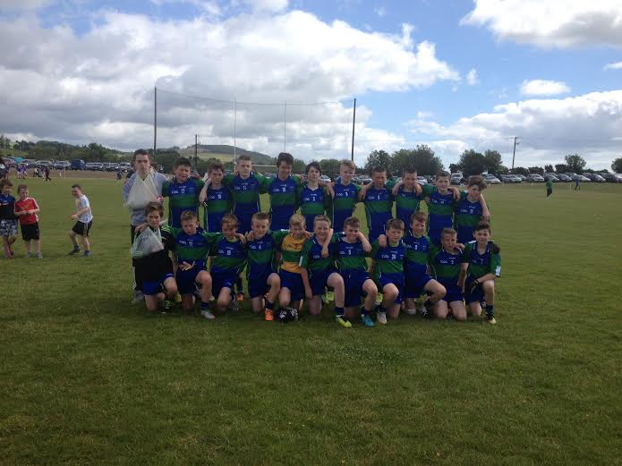
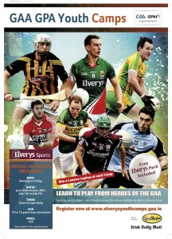
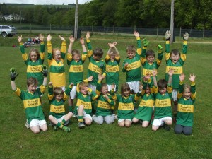
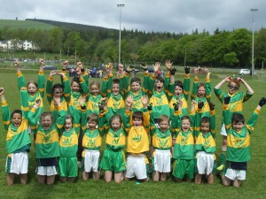
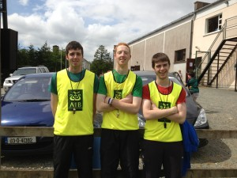

Commiserations to Declan, Andrew, other mentors and the under 14 Derry Gaels team who were defeated in the Division 9 shield final on Sunday in Ballinakill. After a strong first half where they opened up a six point lead, two fortuitous goals at the end of the first half seen an uphill task against the wind. Congratulations to St. Fintan’s Our Lady’s Island in Wexford and congratulations to everyone who helped out in any way over the course of the weekend who made it one to remember for years to come.

Category Archives: Juvenille
{kind=link}
Elverys GAA/GPA Youth camps
The Gaelic Athletic Association (GAA) and Gaelic Players Association (GPA) recently launched the Elverys GAA/GPA Youth camps, offering the chance for juvenile boys aged between 13 to 15 years of age to learn the skills of Gaelic football and hurling from their GAA heroes, in high quality venues across the country over a two week period, from 24th June to 28th June and 1st July to 5th July.
{kind=link}
The camps will be run by inter-county players and will see youths get an insight into the life of an inter-county player in an action packed week that will include conditioned games, skills development, mental preparation, sports nutrition and athletic development. All participants will receive a limited edition Elverys Sports pack while there will also be an exciting skills competition with the chance to win a Lenovo laptop in each camp.
For detailed information about the Elverys GAA/GPA Youth Camps or to book a place please visit https://elverysyouthcamps.gaa.
Go Games Blitz
A very successful juvenile football Go Games Blitz was held in Annacurra on Saturday the 18th of May.
Under 8 and under 10 teams from Annacurra, Baltinglass, Carnew and Tinahely faced each other and displayed their skills. The football was of an excellent quality and the day was most enjoyed by all participants, children and adult alike.

{kind=link}
Annacurra Under 8’s cheer

{kind=link}
Annacurra Under 10’s cheer
Please see here for the full gallery. Many thanks to Richie Doyle for being kind enough to take the pictures and provide them to AnnacurraGAAClub.com
Annacurra would like to thank the participating juvenile clubs for attending and displaying the “Give Respect Get Respect” ethos of the GAA. The future is bright for the county with the quality of footballing skill that our opponents brought on the day.
The club would also like to thank the young players and parents from Annacurra who participated and did us so proud and to pay special tribute to the juvenile coaches and mentors for all the hard work they are doing ensuring the future success of the club.
In addition we would also like to thank Martin O’Brien, James Fitzgerald, Robert Fitzgerald, Philip Doyle, Stephen Murphy and Jack Byrne for referring the games on the day. It is a new undertaking indeed for Annacurra club men to be referring at any level.

{kind=link}
Referee’s James, Robert and Martin, keeping it in the family